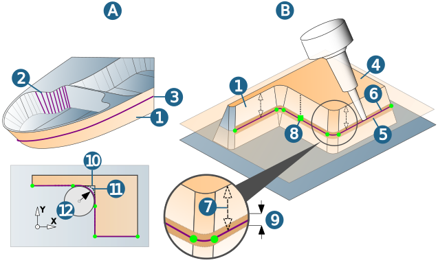
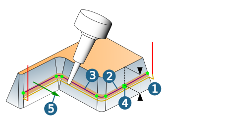

Strategy
Mode
Specify the type of toolpath generation.
In Curve on surfaces mode (A), manually select the faces to be swarfed and one or more profile curves (profiles).
In Base surfaces mode (B), select the faces to be swarfed and a base surface.
Geometry
Side surfaces: Select the faces to be swarfed (1). The number of selected surfaces is displayed.
In Curve on surfaces mode, the tool orientation is determined by the surface itself in the case of curved surfaces or by synchronization or Iso lines (2) in the case of planar surfaces.
Profiles: The profile curve (3) defines the last machining cut within the machining area in the axial direction. It must lie on the faces to be swarfed (1).
Base surfaces (4): Select surfaces.
Use drive surfaces: In the case of insufficient quality of the faces to be swarfed (for example, if the machining tolerance is not sufficient), enable this option to generate inclination information for the tool.
Note
Generate the Drive surfaces with the help of the Swarf face function.
Select Base surfaces (4) and Side surfaces (1). The side surfaces correspond to the surfaces to be swarfed.hyperMILL generates a surface strip (5) and a section curve 6).
Use Offset (7) to define the distance of the section curve to the base surface. You can also do this by dragging the manipulator (8). Use Stripe height (9) to define the width of the surface strip to be generated.
For interior corners (10) or fillets (11) that are smaller than the tool radius, use Diameter to generate a fillet that can be machined with the used tool (12).
Drive surfaces (5): Select the previously generated surface strips as drive surfaces. The number of selected surfaces is displayed.
|  |
Reverse directions
The following applies in Base surfaces mode:
Intersect offset (1): The section curve (2) as the center line of the surface strip (3) defines the machining area in the axial direction. Negative values are not permitted.
Define the section curve offset and influence the axial machining area by dragging the manipulator (4) or entering the values directly.
Cutting side: Machining side on which the toolpath is generated. The machining side is shown as visual feedback (5). You can reverse the machining side by double-clicking on the visual feedback.
It can only be machined if the normal vector of the surface is not directed into the model.
|  |
Infeed mode
Zigzag (1): Machining with alternating orientation.
Oneway (2): Machining is always performed in the same direction.
 |
Synchronise toolpaths
Synchronization lines: The tool orientation is adjusted to the selected synchronization lines.
Additional surfaces
Bottom surfaces: An exact tool path guidance occurs in contact with adjacent rounding surface, if this surface is selected as Bottom surface.
Note
Machining with Bottom surfaces is not possible for the Barrel tool tool type.